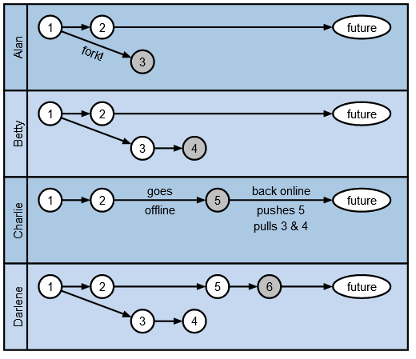

This is an interesting dialect-looking thing that's a Unix utility someone showed me for diagrams. It might interest @rgchris, or others. It's called PIKCHR.
You can try it online at https://pikchr.org/home/pikchrshow ... there are a few examples.
It's a textual set of instructions that lets you lay things out... but differently from something like PDF, it captures intents in a pretty interesting way for aligments and duplication.
Look how it lays out this "swim lanes" example graphic:

$laneh = 0.75
# Draw the lanes
down
box width 3.5in height $laneh fill 0xacc9e3
box same fill 0xc5d8ef
box same as first box
box same as 2nd box
line from 1st box.sw+(0.2,0) up until even with 1st box.n "Alan" above aligned
line from 2nd box.sw+(0.2,0) up until even with 2nd box.n "Betty" above aligned
line from 3rd box.sw+(0.2,0) up until even with 3rd box.n "Charlie" above aligned
line from 4th box.sw+(0.2,0) up until even with 4th box.n "Darlene" above aligned
# fill in content for the Alice lane
right
A1: circle rad 0.1in at end of first line + (0.2,-0.2) fill white thickness 1.5px "1"
arrow right 50%
circle same "2"
arrow right until even with first box.e - (0.65,0.0)
ellipse "future" fit fill white height 0.2 width 0.5 thickness 1.5px
A3: circle same at A1+(0.8,-0.3) "3" fill 0xc0c0c0
arrow from A1 to last circle chop "fork!" below aligned
# content for the Betty lane
B1: circle same as A1 at A1-(0,$laneh) "1"
arrow right 50%
circle same "2"
arrow right until even with first ellipse.w
ellipse same "future"
B3: circle same at A3-(0,$laneh) "3"
arrow right 50%
circle same as A3 "4"
arrow from B1 to 2nd last circle chop
# content for the Charlie lane
C1: circle same as A1 at B1-(0,$laneh) "1"
arrow 50%
circle same "2"
arrow right 0.8in "goes" "offline"
C5: circle same as A3 "5"
arrow right until even with first ellipse.w "back online" above "pushes 5" below "pulls 3 & 4" below
ellipse same "future"
# content for the Darlene lane
D1: circle same as A1 at C1-(0,$laneh) "1"
arrow 50%
circle same "2"
arrow right until even with C5.w
circle same "5"
arrow 50%
circle same as A3 "6"
arrow right until even with first ellipse.w
ellipse same "future"
D3: circle same as B3 at B3-(0,2*$laneh) "3"
arrow 50%
circle same "4"
arrow from D1 to D3 chop